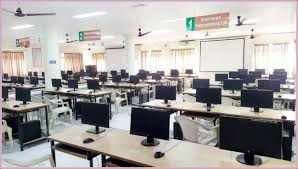

Computer Science and Engineering (CSE) at our college is a hub for innovation and technology.
The branch focuses on cutting-edge fields like Artificial Intelligence, Machine Learning, and Data Science.
Students gain hands-on experience in well-equipped labs with advanced software tools.
The curriculum emphasizes programming, software development, and problem-solving skills.
Faculty members are experienced and guide students in research and industry trends.
Regular workshops, hackathons, and seminars help students stay updated.
The branch has an excellent placement record with top IT companies.
Internships and live projects prepare students for real-world challenges.
Many students excel in national-level competitions and publish research papers.
CSE is the ideal choice for tech enthusiasts aiming for a successful career in the digital age.
Graduates of CSE programs have diverse career opportunities in industries like information technology, software development, telecommunications, and more. They are well-prepared to tackle challenges in both theoretical and practical aspects of computing, making significant contributions to technological advancements.

Computer Science and Engineering
Powerfull People Comes From Powerfull Places.

Computer Science and Enginerering Lab Facility
The CSE labs at our college are equipped with modern systems and advanced software tools to support practical learning.
Students can access high-performance computers, programming environments, and networking equipment.
Dedicated labs for AI, Machine Learning, and Data Science provide hands-on experience in emerging technologies.
The labs are regularly updated to align with industry standards, ensuring students are well-prepared for real-world challenges.
Networking labs offer routers, switches, and simulators for in-depth study. Dedicated project labs encourage innovation and research, while the internet facility ensures seamless online learning. Regular software updates and modern infrastructure align the labs with the latest industry standards, fostering an ecosystem for skill development and technological advancement.
Networking labs offer routers, switches, and simulators for in-depth study. Dedicated project labs encourage innovation and research, while the internet facility ensures seamless online learning. Regular software updates and modern infrastructure align the labs with the latest industry standards, fostering an ecosystem for skill development and technological advancement.
